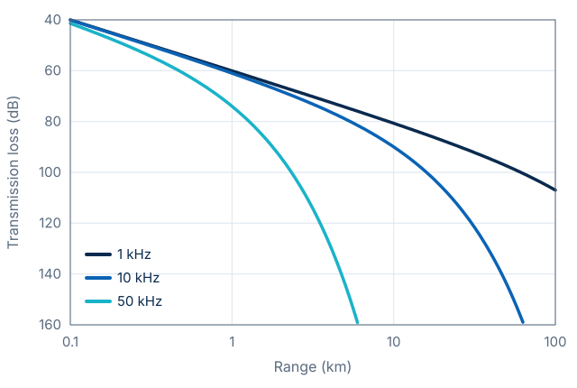

Conference Name 2026
City, Country · Month Day
City, Country · Month Day
Title of Your Poster Goes Here
A one-line subtitle that says what visitors will learn
Motivation
- Light fades within tens of metres, sound travels for kilometres
- Passive acoustic monitoring observes marine life without disturbing it
- Whales, dolphins and fish choruses, day and night
- Long-term recorders on buoys, gliders and the sea floor
- Human noise is rising: shipping, offshore construction, sonar [1]
Range Depends on Frequency
- Sound speed in sea water \(c \approx 1500\) m/s, about 4.4× faster than in air
- Loss grows with range: spreading plus absorption \[ \mathrm{TL}(r) = 20\log_{10}\frac{r}{1\,\mathrm{m}} + \alpha(f)\, r \]
- High frequencies fade fast: 50 kHz is gone after a few kilometres

Processing Chain
- Beamforming raises the signal-to-noise ratio before any learning happens
- Detector is small enough to run in real time on a buoy
Signal Model
Acoustic wave equation
\[ \nabla^2 p - \frac{1}{c^2}\,\frac{\partial^2 p}{\partial t^2} = 0 \]
Delay-and-sum beamformer
\[ y(t) = \frac{1}{M}\sum_{m=1}^{M} x_m\big(t - \tau_m(\theta)\big), \quad \tau_m(\theta) = \frac{d_m \cos\theta}{c} \]
Array gain in uncorrelated noise
\[ \mathrm{AG} = 10 \log_{10} M \ \text{dB} \]
- \(p\)
- acoustic pressure
- \(c\)
- sound speed, about 1500 m/s
- \(x_m\)
- signal at hydrophone \(m\)
- \(d_m\)
- position of hydrophone \(m\)
- \(\theta\)
- bearing of the source
Call Detection
| Method | Sensors | Precision | Recall | F1 | Latency |
|---|---|---|---|---|---|
| Energy detector | 1 | 0.62 | 0.71 | 0.66 | 5 ms |
| CNN, single channel | 1 | 0.84 | 0.80 | 0.82 | 35 ms |
| Beamforming + CNN (ours) | 4 | 0.93 | 0.89 | 0.91 | 40 ms |
+6dB
signal-to-noise ratio
from four hydrophones instead of one
0.91
F1 score
against 0.82 for a single channel
40ms
latency
real time on a low-power buoy computer
Take-Home Messages
- Sound is the best way to observe the ocean over long distances
- A small hydrophone array adds about 6 dB before any learning
- Beamforming plus a compact detector runs in real time on a buoy
Next step: one sentence on what comes next, or the question you want visitors to remember.